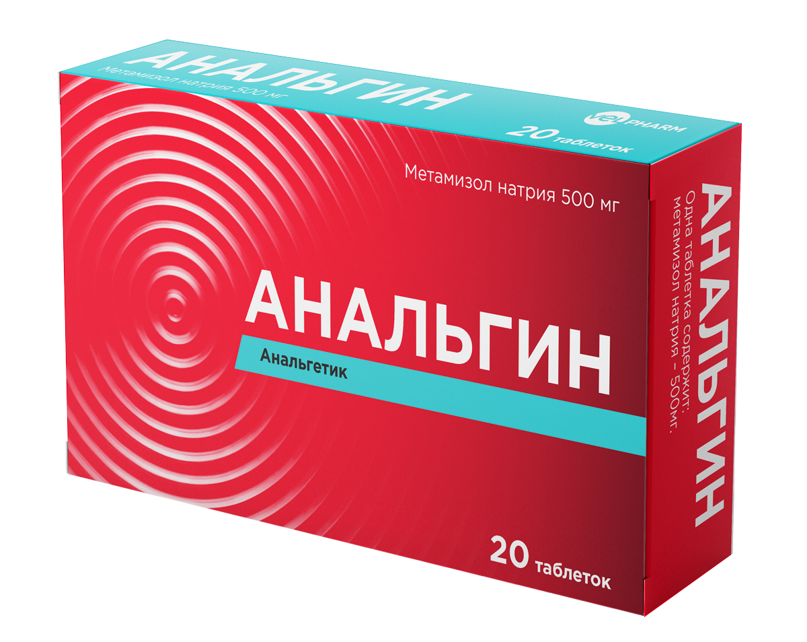

Online Pharmacy
Online Pharmacy

Analgin
430 ₸
Add to Cart
Description:
- Indications:
- Severe acute or chronic pain with injuries and postoperative pain, with colic, with cancer and other conditions where other therapeutic measures are contraindicated.
- Fever resistant to other treatments.
- Dosage regimen:
- The dose depends on the severity of pain or fever, as well as individual susceptibility to the action of analgesics.
- The tablets should be swallowed whole with a sufficient amount of liquid. Initially, the lowest effective dose should be used.
- The maximum effect of the drug develops, usually after 30-60 minutes. after ingestion.

Paracetamol Velparhm
630 ₸
Add to Cart
Description:
- Indications:
- Anesthetic for mild to moderate pain: arthralgia, myalgia, neuralgia, migraine, toothache and headache.
- Dosage regimen:
- Inside, with a large amount of liquid, 1-2 hours after a meal.
- Adults: is not recommended for use for more than 3 days without the appointment and supervision of a doctor.
- Children: is not recommended for use for more than 3 days without the appointment and supervision of a doctor.
- The interval between doses should be at least 4 hours. The drug should not be taken simultaneously with other paracetamol-containing drugs.
Citramon P
150 ₸
Add to Cart
Description:
- Indications:
- headache
- migraine
- toothache
- Dosage regimen:
- Orally (during or after meals, drinking plenty of water at each dose).
- Adults and children over 15 years: 1-2 tablets 2-3 times a day.
- The break between doses of the drug should be at least 4 hours.
- The course of treatment is no more than 7-10 days.
-
- Pain syndrome of mild and moderate severity (of various origins):
Ibuprofen Velpharm
470 ₸
Add to Cart
Description:
- Indications:
- headache;
- toothache;
- painful menstruation;
- muscle pain;
- rheumatic pain and joint pain;
- Dosage regimen:
- Tablets should be swallowed with water, preferably on time or after meals. Do not take more often than 4 hours later.
- The course of treatment without consulting a doctor should not exceed 5 days.
- Do not use in children under 12 years of age without consulting a doctor.
-
- Ibuprofen is used for:
Ketorolak
820 ₸
Add to Cart
Description:
- Indications:
- trauma;
- toothache;
- pain in the postpartum and postoperative period;
- oncological diseases;
- neuralgia;
- Dosage regimen:
- Inside, once or repeatedly, depending on the severity of the pain syndrome.
- A single dose - 10 mg (1 tablet), it is recommended to take 10 mg up to 4 times a day, depending on the severity of the pain.
- The maximum daily dose should not exceed 40 mg.
- The duration of the course should not exceed 5 days.
- The minimum effective dose of ketorolac should be used in the smallest possible short course.
-
- Pain syndrome of severe to moderate intensity:
Lidokain Velpharm
230 ₸
Add to Cart
Description:
- Indications:
- Local and regional anesthesia, conduction anesthesia for large and small surgical interventions.
- Dosage regimen:
- The dosage regimen should be selected based on the response of the patient and the injection site.
- The drug should be administered at the lowest concentration and lowest dose, giving the desired effect.
- The maximum dose for adults should not exceed 300 mg
- The volume of solution to be administered depends on the size of the anesthetized area.